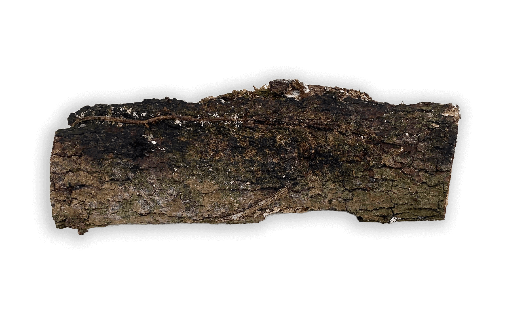
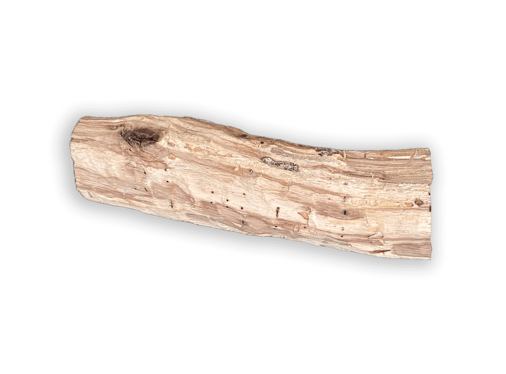
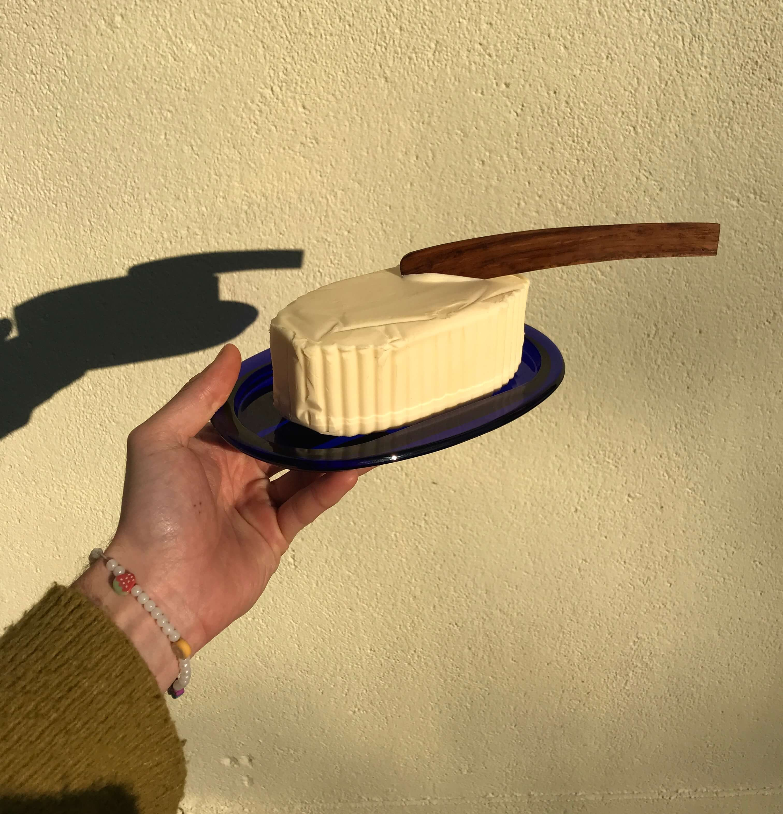

Hi there Tools Magazine!
I'm Jesús Manzanares and the purpose of this page on my website is to show my submission for your 4th issue "To Cut".
I decided to do it on my own website instead of sending you a PDF or the like because I can include different types of content here, like animated gifs.
I would like to show you all the cuts necessary to make the only knife that isn't conceived to cut but to spread, the butter knife.
In the last weeks I've been experimenting with different shapes of what can be (under my own opinion) the best butter knife.
The material used for this knife is my very own garden's oak, grown in the French countryside.
In order to make the butter knife, different tools meant for cutting have been used. That being tools such axes and saws.
I use rotted or dried out branches from the oak, peel them, remove the bad parts (the exterior ones) and keep the good ones (the duramen).
This wood is already seasoned, as it dried in the tree, so I don't have the problem of future shrinkage or deformation.
This is the first version of the butter knife

The second one, with a small cut to separate blade form handle
The third one, longer and with a small cord to hang

The log thats serves as a cutting surface for the work
Axe used to cut the branch from the oak
Smaller one to divide the branch in workable bits
Raw branch
Branch without bark
Smaller piece
Smaller piece 2
Saw used to cut to shape
Chisel used to remove excess material
Butter knife ready to spread some delicious butter

Ah yes! This is me cutting a branch from one of the oak trees
Lastly, I would like to thank you for taking the time to read my presentation, I hope it is of your interest.
In case you'd like to feature some of my work in the next issue I'd be more than pleased to collaborate with you in any way you'd need, that being images, drawings, texts or anything you'd need. I can even send one of the knifes for you to do your thing.
You can contact me anytime at j@vigasworks.com
Have a wonderful day!